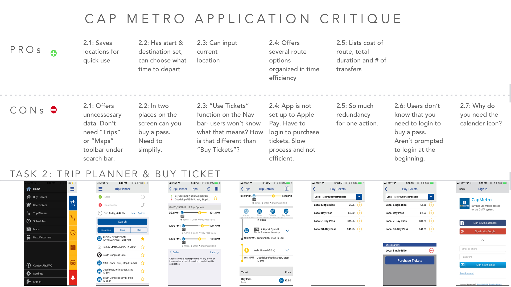
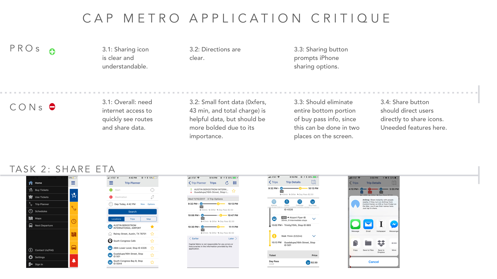
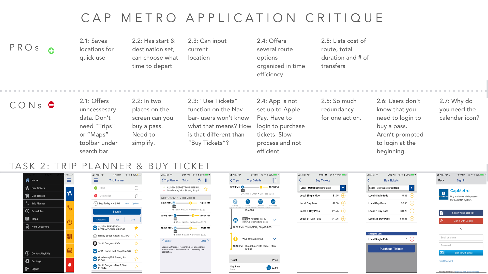
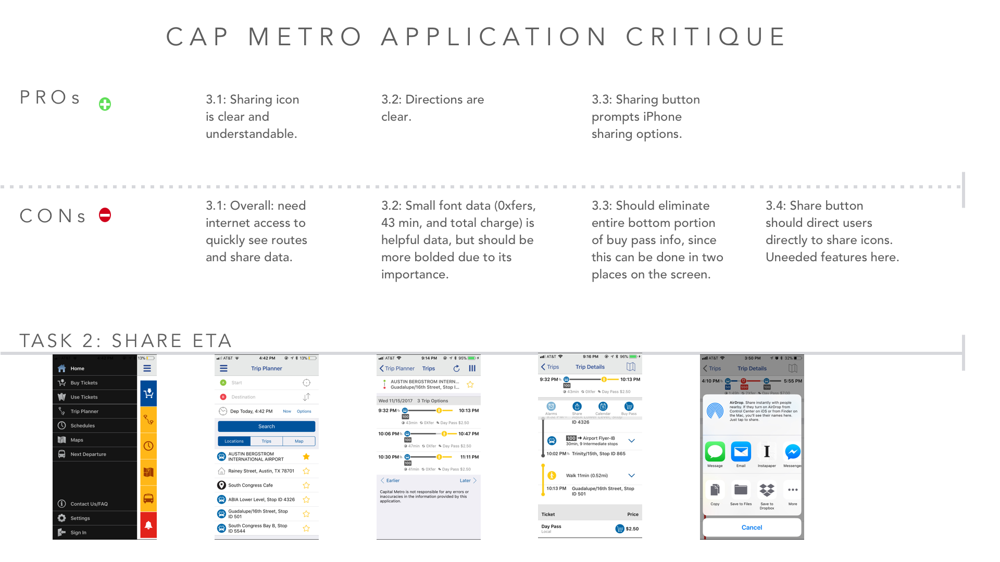
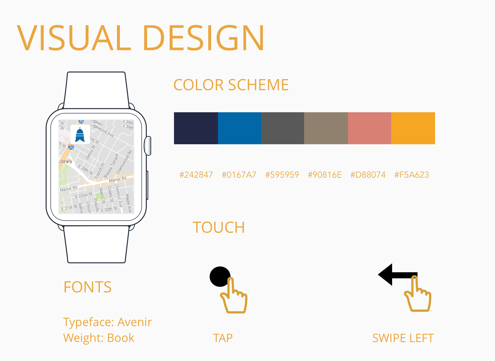
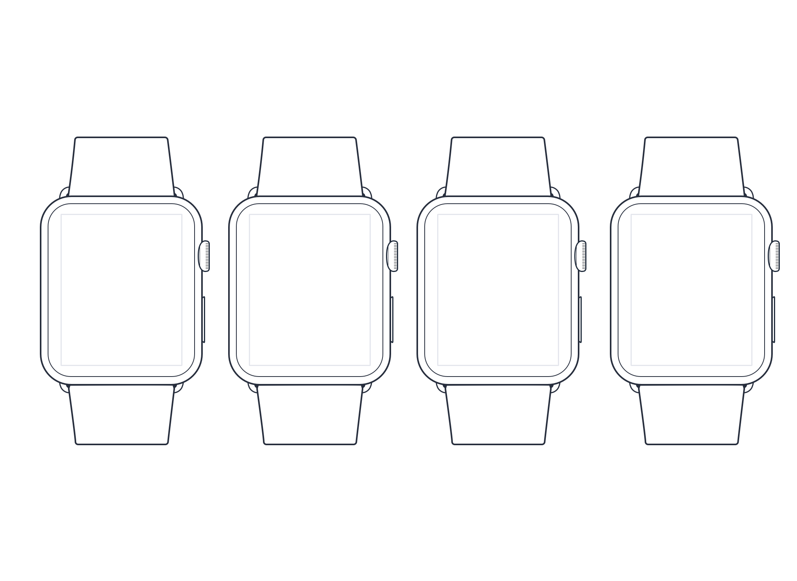
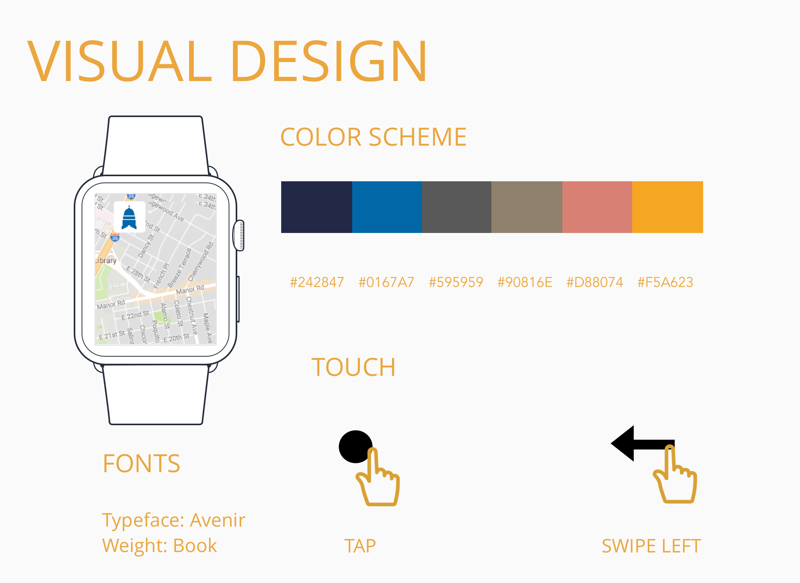
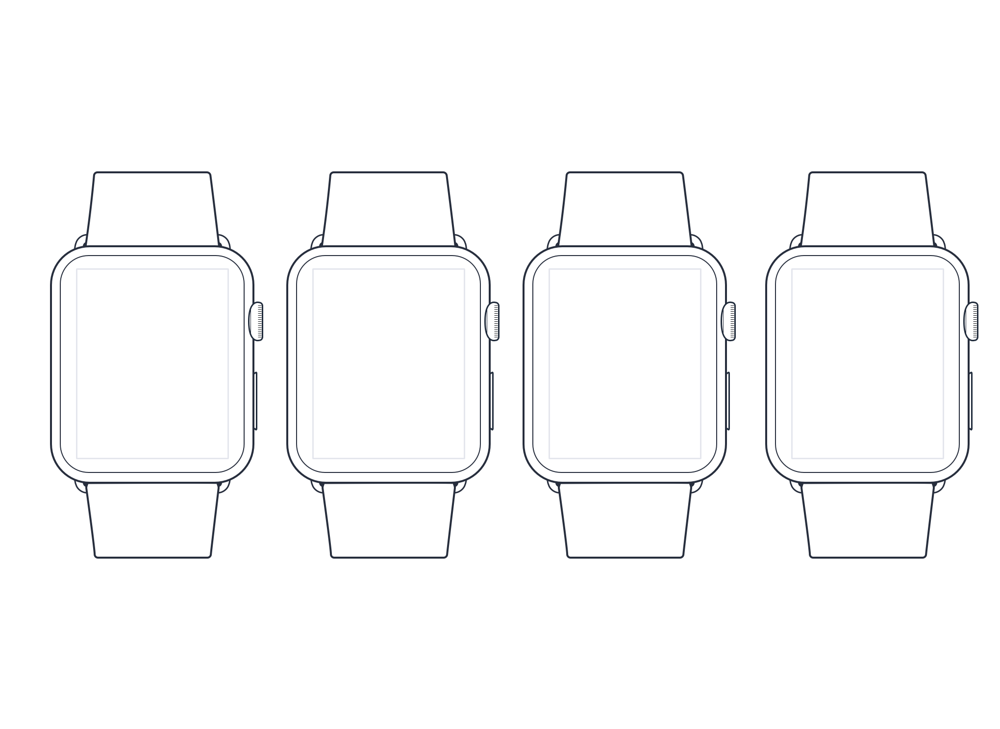

Discover the New Austin Transportation Experience.
Objective
It has been observed that Austin CapMetro App isn’t meeting users’ needs of easily finding routes to take and getting notifications for rides, which is causing less users to use the app and ride the bus. I asked myself how might I improve the existing application so that the product is more successful based on user use of the app and bus tickets bought.
Plan
After identifying that the app inefficiently conveys information, I decided to ask potential users of the Austin CapMetro app what their current frusterations were with the existing app and what features they were looking for.
I asked users a series of questions to better understand their transportation behavior. View Interview Questions Here.
Once I got initial insight to the current problems that exist within the CapMetro app, I also assigned users to login within the current application and perform different tasks to help me identify interface issues and identify needed features.
Perform these tasks:
- Open app and input a route from point A to point B.
- View different route options.
- Select preferred route and share ride with a contact.
- Track buses in your current location.
- Buy a single pass ticket.
Task Analysis
Shown is the current workflow for performing these actions within the existing CapMetro app that stands, and listed below are my critiques.
To summarize my findings, the current app is not well designed for mobile use, and offers countless ways to accomplish the same task, which creates confusion for users.
 



After speaking with potential users and getting feedback on the existing app, I built out a few personas to keep in mind target users of the app. This helped me design for the specific problems identified by customers.

I decided to focus on designing specifically with the biker persona in mind, with the intention of creating an easier experience transitioning from bike to bus on a person's daily commute while remaining mobile. I mapped out a user journey for the biker to anticipate his or her experience with the product I was going to build.

I quickly brainstormed solutions for the selected biker persona. I wanted features that enabled users to reserve a spot on the bike rack, a way to let bus drivers know that extra time should be alloted for the loading time, and to reserve bus spots for special needs, like handicap seats. The ultimate goal of the CapMetro design was to simplify.
After looking at the major takeaways fron user interviews, persona building, evaluating the current task analysis, and making a user journey, a new task analysis of the CapMetro App as an apple watch app was mapped out.
Lo-Fi to High-Fi Prototyping
Through rapid iteration and testing, I quickly put together mockups of my designs and improved my system with each round.
I started small with simple sketches and wireframes. In the next round I began to implement more detail into the interface, until I eventually built out an entire platform with tools like Invision and Sketch to make a functional prototype.
Click arrow to see lower fidelities & visual design.
 




Style Choices
The color scheme was chosen by implementing the two blues currently used on the existing app. The yellow seen throughout the app again was a color pulled from the existing app, and even provides a reminiscent feel to a traditional school bus color. The lighter shades of pink, gray, and taupe intend to reflect the colors commonly seen on maps.
The font was as a simple choice with the purpose of being easily readable especially while users are moving throughout their day.
The touch and interaction for the watch also aimed to increase ease of use. Apple Watch screens are small and are successful when they don’t require a lot of manual navigation within the app. CapMetro prompts screens only that are necessary and automatically slide to the left when the screen leads you to the next.
Survey Design & Usability Testing
With the high fidelity mockups complete, I was ready to recruit users to test out the product. I sent out a screener survey to my network to find five ideal candidates that represented my targeted user - a person living in Austin who heavily used public transportation and would be interested in RSVPing seats for his or her specific needs. I allowed my survey to be general enough that users would not know exactly what kind of software I would be testing to reduce volunteer or response bias. Once I pinpointed the most representative respondants for my targeted users, I met with them to observe their interactions with the CapMetro Prototype I mocked up in Invision.
CapMetro Screener Survey - Google Form